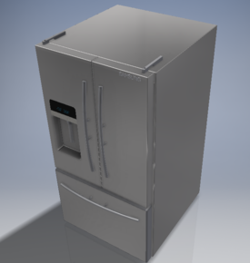
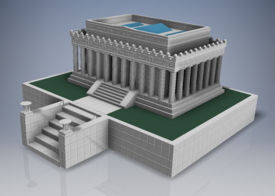
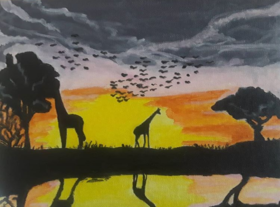

A dozer project designed by a partner and myself for my IED class
For my final project, I worked on designing a samsung refrigerator. You can see that below.
A mock up of the Lincoln Memorial I made in my Engineering class. You can see a comparison of both just below.
Also, I worked on different experiments in my chemistry class.
In addition to this, painting or drawing projects in Art class. I can draw well according to most people.
